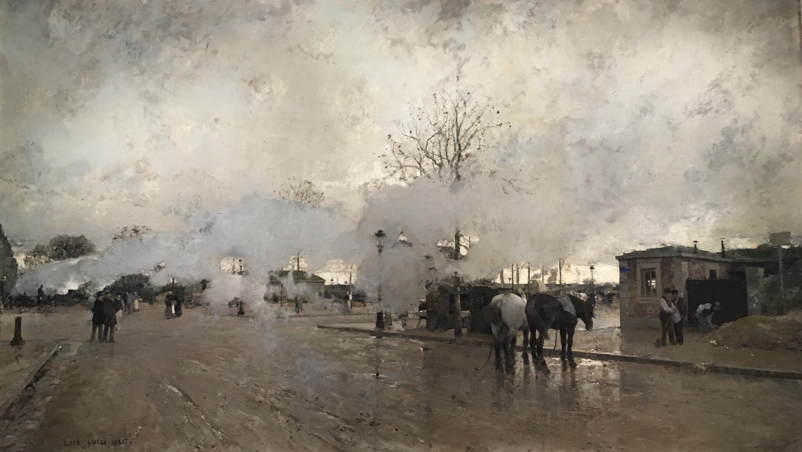
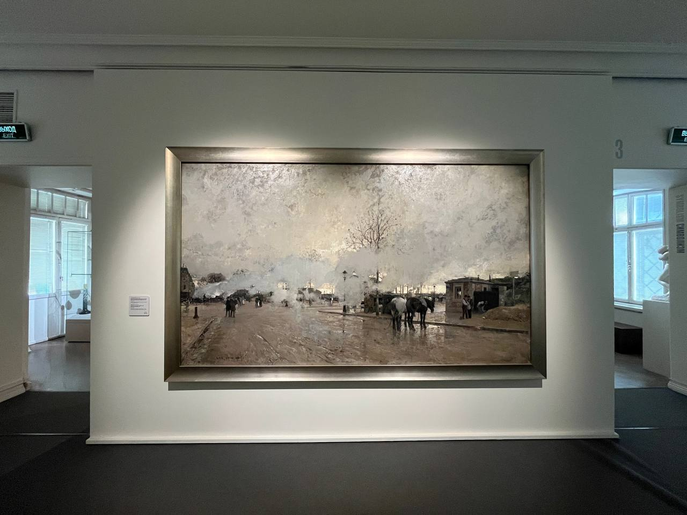

Луиджи Алоис-Франсуа-Жозеф Луар
Smoke on the Paris Circuit Line (Дым окружной парижской железной дороги), 1885


Холст, масло, 172 x 296 см
ГМИИ им. А.С. Пушкина, Москва. Дата поступления 1925 г.
Луиджи Луар родился в Австрии. Переехав с родителями в Парму, в 1853 году Луар начал изучать живопись в местной Академии художеств. В 1865 году художник отправился в Париж, где в том же году с успехом дебютировал в Салоне. Луар начал работать как художник-оформитель и мастер плафонной живописи. Многие картины мастера покупались мэрией города, а также крупными европейскими музеями. Луиджи Луар получил множество наград, в том числе Золотую медаль Всемирной выставки 1889 года. А за год до этого получил орден Почётного легиона. В начале 1870-х годов Луар начал писать виды Парижа, которые принесли ему успех. Луар даже был избран «художником парижских бульваров». В своих парижских пейзажах Луар пытался захватить разнообразные виды города в разное время суток. Художник исследовал специфику освещения различного состояния атмосферы: он любил облачность, дождь, туман в смеси с электрическим освещением, сумерки и солнечные отражения в ясные дни. К подобного рода работам относится и картина из музейного собрания. Его парижские виды с их тональной живописной гаммой, безусловно, созданы под влиянием живописи импрессионистов.
Источник: https://collection.pushkinmuseum.art/entity/OBJECT/78186